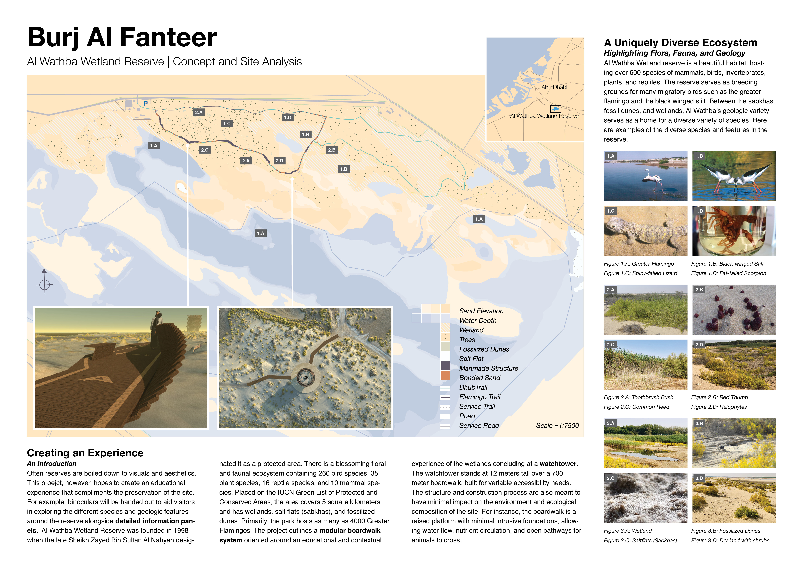
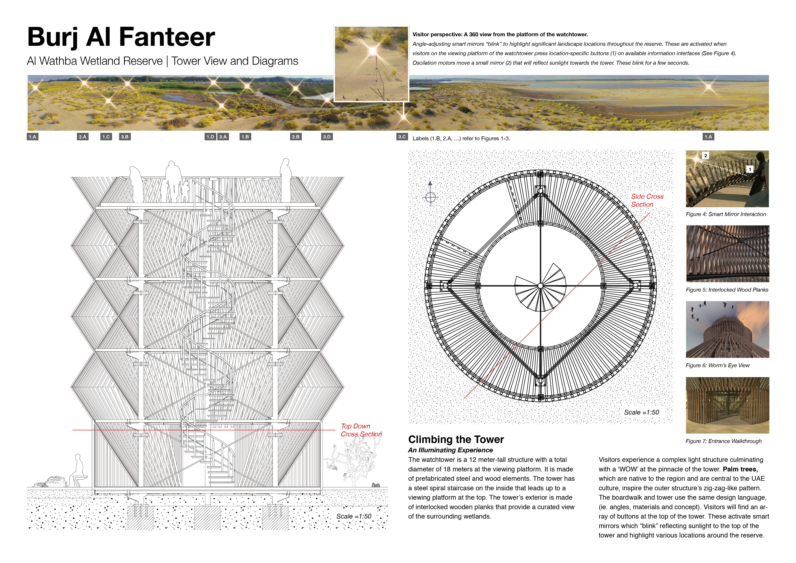
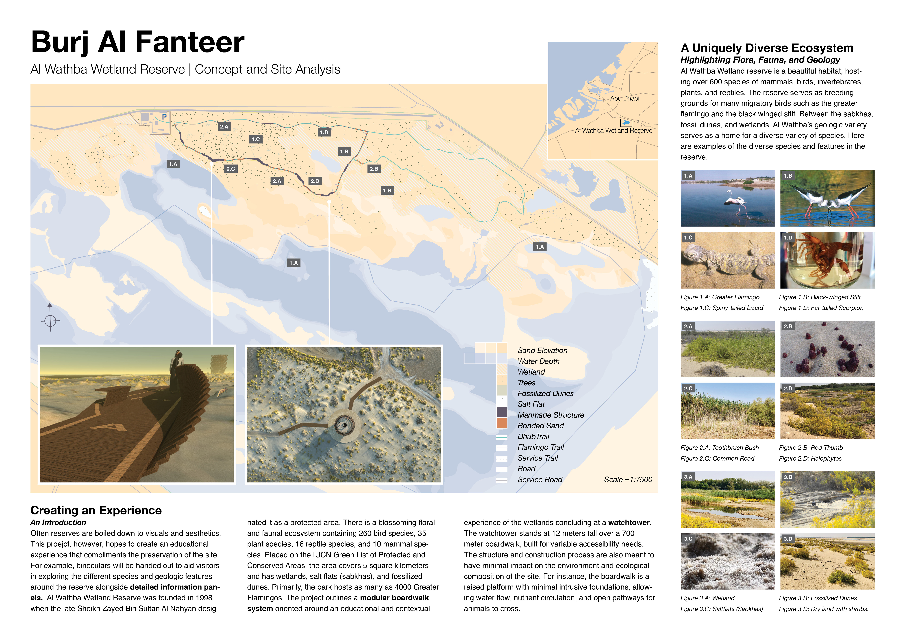
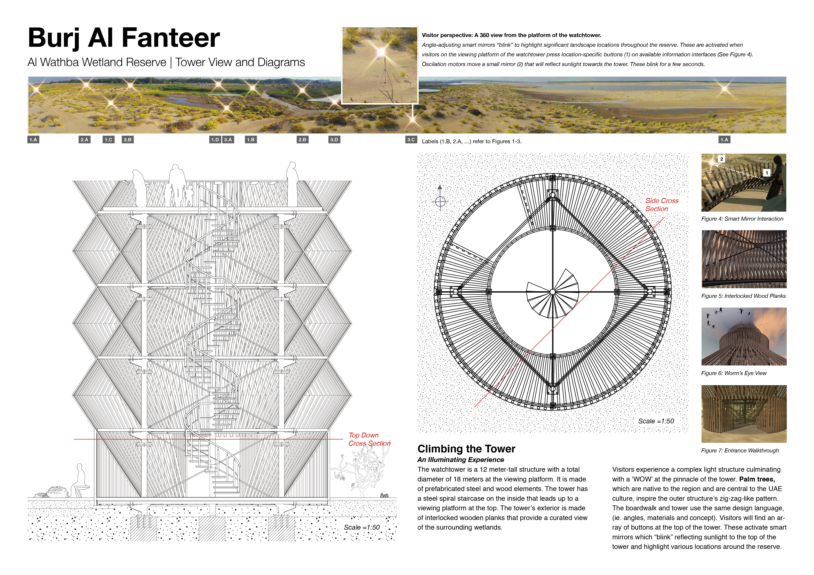

Collaborators | Nisala Sathyajith Saheed and Adham Chakohi
Several years ago, a water pipeline burst in the Al Wathba region of Abu Dhabi, releasing enough water for the growth of a wetland. Today, the Al Wathba Wetland Reserve serves as seasonal breeding grounds for greater flamingos and hosts over 600 other species of flora and fauna. To improve visitor’s experience of the area while protecting the thriving habitats, Environment Agency – Abu Dhabi requested designs for a watchtower and boardwalk. In response, I worked with the NTSI Lab at NYUAD to propose the following concept.
Concept
The tower draws upon the regional icon of the palm tree, significant as a traditional material used in household items, buildings, and boats. When possible, the proposed construction calls for using the leaves of the palm tree. At the top, interactive panels tied educate visitors with information visually embedded in the surrounding reserve through a reflective mirror system.
As a complement to the visual language of the tower, the boardwalk mimics the rise and fall of the wings of a flying flamingo. A modular system, it elevates visitors at key points along the path and offers information on significant geography, flora, and fauna in view. In between each module, compressed sand, an environmentally conscious alternative to concrete, demarcates the main path.
Through visual language, material choices, and content curation, the proposed designs reference the local heritage and environment to embed the structures in the reserve.
Contribution
As a collaborative effort of an integrated team, the results at every stage of production belong to every member. Each of us contributed to every piece of produced content.
My contributions to this project included:
- Creating scaled area maps from publicly available satellite images, onsite drone scans and photographs, interviews of site employees, and zoning records. The maps integrate data on significant geological features, habitat ranges of significant fauna, seasonal changes in water levels, flora density, elevation, property boundaries, existing buildings and relevant infrastructure. Proposed buildings and visitor flows are overlaid onto this background.
- Creating section diagrams from 3D models of the proposed watchtower. These provide a sense of scale and construction process.
- Researching and advising on construction constraints, cost assessments, and material choices.
- Organizing, documenting, and assisting a drone scan of the site.
Proposal
 


